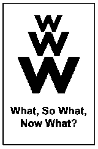
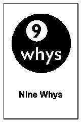
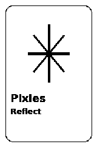
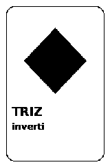
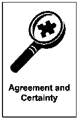
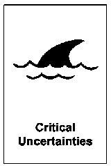
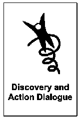
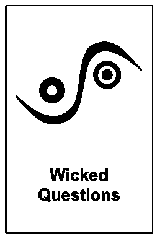

What So What Now What (W³): debriefing in 3 domande
What, So What, Now What (W³) è una struttura di debriefing in tre domande: What (cosa è successo), So What (cosa significa per noi)...
Strutture per definire il problema.
8 strutture

What, So What, Now What (W³) è una struttura di debriefing in tre domande: What (cosa è successo), So What (cosa significa per noi)...

9 Whys è una Liberating Structure ispirata alla tecnica dei 5 Whys: a coppie, una persona chiede ripetutamente "Perché è importante...

Pixie Reflection è un adattamento di [1-2-4-All](/structures/1-2-4-all/) con quattro domande guida su ambizioni, resistenze e paure...

TRIZ è una Liberating Structure che inverte l'obiettivo: chiedi al gruppo come peggiorare la situazione. Da li' emergono le abitudini...

La matrice Agreement & Certainty aiuta a scegliere il metodo giusto, classificando la sfida come semplice, complicata, complessa o caotica.

Esplora scenari futuri partendo dalle incertezze che non puoi controllare.

Il Discovery & Action Dialogue fa emergere pratiche che funzionano già nel gruppo, per risolvere problemi comuni con le risorse che avete.

Wicked Questions è una Liberating Structure che formula domande paradossali: tengono insieme due obiettivi in tensione invece di...
9 Whys scava nelle cause profonde in 20 minuti. Wicked Questions mette in tensione due verità che sembrano opposte. Evita di saltare alla soluzione troppo presto.
9 Whys quando devi capire perché succede qualcosa. TRIZ quando il gruppo è già polarizzato su due posizioni e devi trovare una terza via.